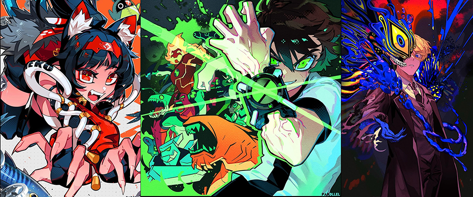
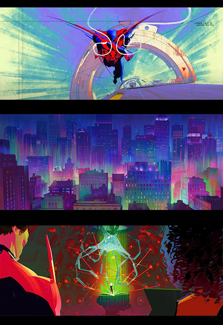
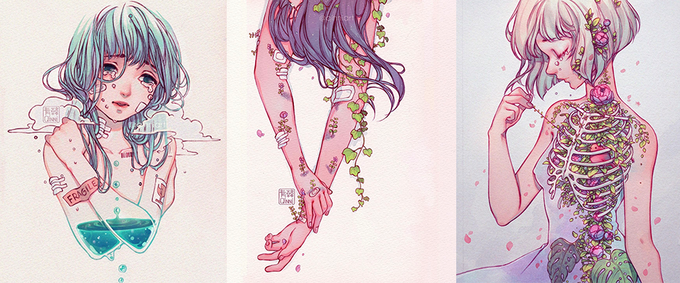

Artists I'm Inspired By
My name is Louella Mortel and these are the artists that inspire me...
par0llel

This artist inspires me because of their sharp and confident lineart along with their good use of colors
that have a unique pop.
Kat Tsai

This artist inspires me because of how well they do their lightings and environment especially since they are one of the
artists in Spiderverse, a film which is known to be very artistic.
Qinni Art

This artist has been an inspiration in my life with the way they create meaning behind their works. Each work of theirs
correlates to how this artist has been doing regarding their health. They are no longer with us and yet they are still one of
my biggest inspirations to this day.